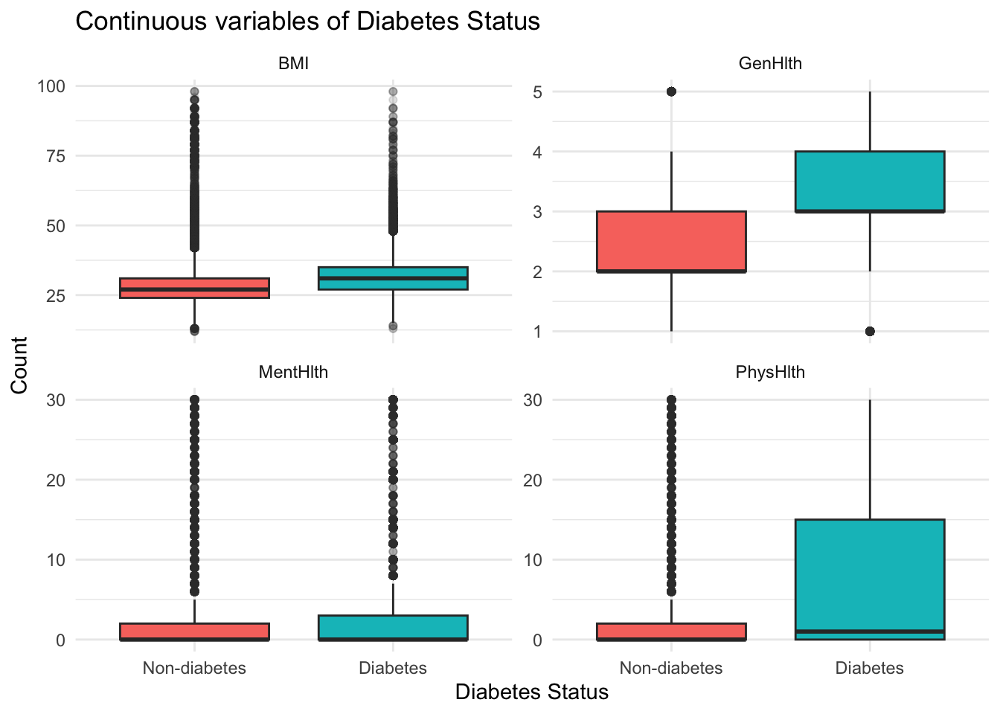

library(dplyr)
library(knitr)
chi_diabetes = read.csv("Diabete datasets/diabetes_binary_health_indicators_BRFSS2015.csv")
cat_vars <- c(
"HighBP", "HighChol", "CholCheck","Smoker", "Stroke", "HeartDiseaseorAttack",
"PhysActivity", "Fruits", "Veggies", "HvyAlcoholConsump",
"AnyHealthcare", "NoDocbcCost", "DiffWalk",
"Sex", "Age", "Education", "Income"
)
chi_results <- list()
for (v in cat_vars) {
tbl <- table(chi_diabetes$Diabetes_binary, chi_diabetes[[v]])
test <- chisq.test(tbl)
chi_results[[v]] <- test
}
chi_table <- data.frame(
Variable = names(chi_results),
Chi_square = sapply(chi_results, function(x) unname(x$statistic)),
df = sapply(chi_results, function(x) unname(x$parameter)),
p_value = sapply(chi_results, function(x) x$p.value)
)
chi_table$p_value <- format(chi_table$p_value, scientific = TRUE) #show detailed p-value result
kable(chi_table, digits = 4, row.names = FALSE, caption = "Chi-square test results for categorical variables") #put everything neatly in a table| Variable | Chi_square | df | p_value |
|---|---|---|---|
| HighBP | 17562.4461 | 1 | 0.000000e+00 |
| HighChol | 10174.0749 | 1 | 0.000000e+00 |
| CholCheck | 1062.9381 | 1 | 3.751399e-233 |
| Smoker | 937.0558 | 1 | 8.640172e-206 |
| Stroke | 2838.9165 | 1 | 0.000000e+00 |
| HeartDiseaseorAttack | 7971.1558 | 1 | 0.000000e+00 |
| PhysActivity | 3539.4194 | 1 | 0.000000e+00 |
| Fruits | 421.6115 | 1 | 1.088121e-93 |
| Veggies | 811.8060 | 1 | 1.463029e-178 |
| HvyAlcoholConsump | 825.1188 | 1 | 1.865932e-181 |
| AnyHealthcare | 66.8124 | 1 | 2.986181e-16 |
| NoDocbcCost | 250.3138 | 1 | 2.218395e-56 |
| DiffWalk | 12092.3197 | 1 | 0.000000e+00 |
| Sex | 250.4137 | 1 | 2.109875e-56 |
| Age | 8795.0506 | 12 | 0.000000e+00 |
| Education | 4027.1123 | 5 | 0.000000e+00 |
| Income | 7003.7151 | 7 | 0.000000e+00 |
All categorical variables showed statistically significant differences between diabetic and non-diabetic participants (all p < 0.001).
cont_vars <- c("BMI", "MentHlth", "PhysHlth", "GenHlth")
# Run t-tests and extract key results
t_results <- lapply(cont_vars, function(v) {
tt <- t.test(chi_diabetes[[v]] ~ chi_diabetes$Diabetes_binary)
data.frame(
Variable = v,
Mean_non_diab = unname(tt$estimate[1]),
Mean_diab = unname(tt$estimate[2]),
t_statistic = unname(tt$statistic),
df = unname(tt$parameter),
p_value = tt$p.value
)
})
# Combine list rows into a data frame
t_table <- bind_rows(t_results)
# Format values
t_table <- t_table |>
mutate(
Mean_non_diab = round(Mean_non_diab, 2),
Mean_diab = round(Mean_diab, 2),
t_statistic = round(t_statistic, 2),
df = round(df, 1),
p_value = p_value)
t_table$p_value <- formatC(t_table$p_value, format = "e", digits = 2)
# Print table
kable(t_table, caption = "Summary of t-tests")| Variable | Mean_non_diab | Mean_diab | t_statistic | df | p_value |
|---|---|---|---|---|---|
| BMI | 27.81 | 31.94 | -99.92 | 44093.4 | 0.00e+00 |
| MentHlth | 2.98 | 4.46 | -29.69 | 42871.8 | 7.93e-192 |
| PhysHlth | 3.64 | 7.95 | -68.97 | 41367.0 | 0.00e+00 |
| GenHlth | 2.39 | 3.29 | -156.14 | 47855.0 | 0.00e+00 |
All tests showed highly significant differences (all p < 2.2 × 10⁻¹⁶), indicating that the mean health outcomes differ substantially between the two groups.
library(dplyr)
library(tidyr)
library(ggplot2)
df_cont <-
chi_diabetes |>
pivot_longer(cols = all_of(cont_vars),
names_to = "variable",
values_to = "value")
ggplot(df_cont,aes(x = factor(Diabetes_binary,
levels = c(0, 1),
labels = c("Non-diabetes", "Diabetes")),
y = value,
fill = factor(Diabetes_binary))) +
geom_boxplot(outlier.alpha = 0.15) +
facet_wrap(~ variable, scales = "free_y") +
labs(
title = "Continuous variables of Diabetes Status",
x = "Diabetes Status",
y = "Count"
) +
theme_minimal() +
theme(legend.position = "none")
Comments on the plot